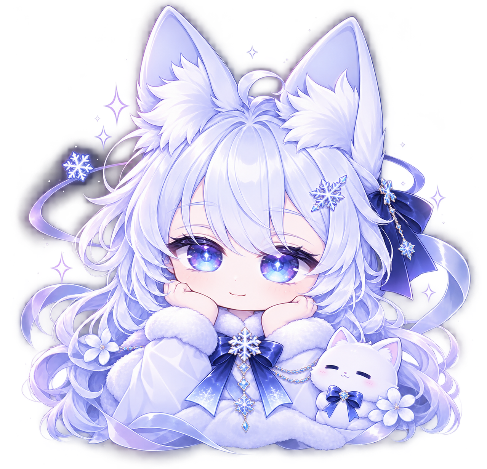

WELCOME TO MY LITTLE CORNER
一起玩、一起聊，
把日常變有趣。
嗨，我是 Qiansnow 千雪。這裡有直播、遊戲和生活裡的小事，歡迎來坐坐，認識一下。
不定期開台 · 追蹤社群掌握最新消息

✦
✧
GAMES ✦ CHAT ✦ COMMUNITY ✦ GOOD VIBES ✦ GAMES ✦ CHAT ✦ COMMUNITY ✦
A LITTLE ABOUT ME
先打聲招呼，再一起冒險。
我是 Qiansnow 千雪，一位喜歡遊戲、聊天，也喜歡和大家分享生活的創作者。
不管你是想找人一起玩、聽聽背景音，或只是想在聊天室說聲嗨，都很歡迎加入。希望這裡能成為你放鬆一下的小角落。
FIND ME ONLINE